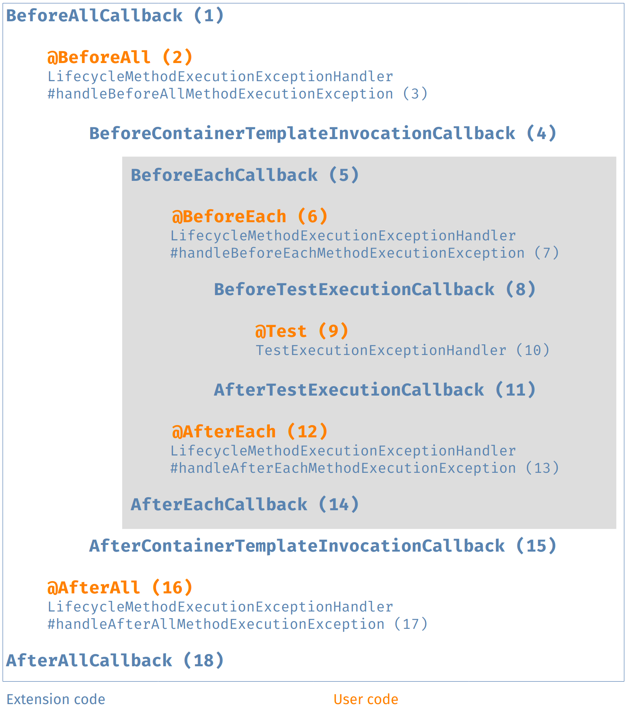
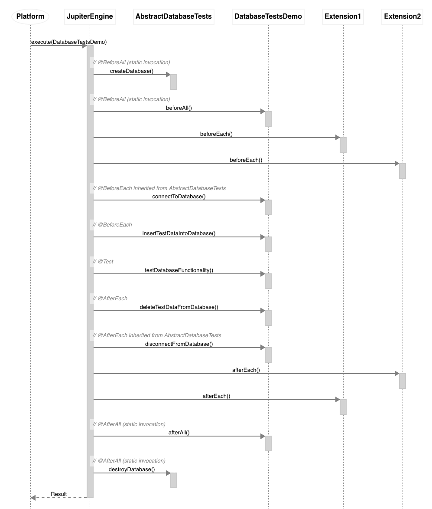
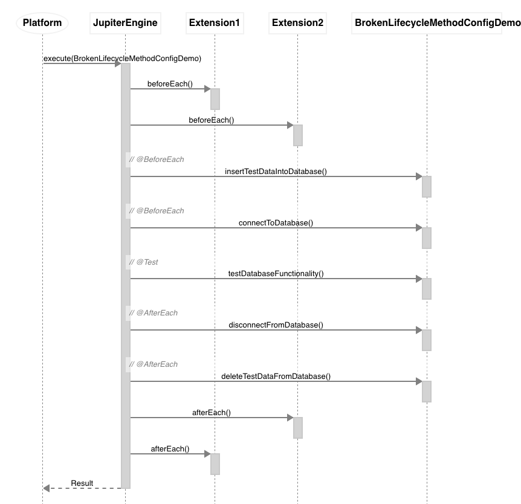

Relative Execution Order of User Code and Extensions
When executing a test class that contains one or more test methods, a number of extension callbacks are called in addition to the user-supplied test and lifecycle methods.
| See also: Test Execution Order |
User and Extension Code
The following diagram illustrates the relative order of user-supplied code and extension code. User-supplied test and lifecycle methods are shown in orange, with callback code implemented by extensions shown in blue. The grey box denotes the execution of a single test method and will be repeated for every test method in the test class.

The following table further explains the sixteen steps in the User code and extension code diagram.
-
interface
org.junit.jupiter.api.extension.BeforeAllCallback
extension code executed before all tests of the container are executed -
annotation
org.junit.jupiter.api.BeforeAll
user code executed before all tests of the container are executed -
interface
org.junit.jupiter.api.extension.LifecycleMethodExecutionExceptionHandler #handleBeforeAllMethodExecutionException
extension code for handling exceptions thrown from@BeforeAllmethods -
interface
org.junit.jupiter.api.extension.BeforeClassTemplateInvocationCallback
extension code executed before each class template invocation is executed (only applicable if the test class is a class template) -
interface
org.junit.jupiter.api.extension.BeforeEachCallback
extension code executed before each test is executed -
annotation
org.junit.jupiter.api.BeforeEach
user code executed before each test is executed -
interface
org.junit.jupiter.api.extension.LifecycleMethodExecutionExceptionHandler #handleBeforeEachMethodExecutionException
extension code for handling exceptions thrown from@BeforeEachmethods -
interface
org.junit.jupiter.api.extension.BeforeTestExecutionCallback
extension code executed immediately before a test is executed -
annotation
org.junit.jupiter.api.Test
user code of the actual test method -
interface
org.junit.jupiter.api.extension.TestExecutionExceptionHandler
extension code for handling exceptions thrown during a test -
interface
org.junit.jupiter.api.extension.AfterTestExecutionCallback
extension code executed immediately after test execution and its corresponding exception handlers -
annotation
org.junit.jupiter.api.AfterEach
user code executed after each test is executed -
interface
org.junit.jupiter.api.extension.LifecycleMethodExecutionExceptionHandler #handleAfterEachMethodExecutionException
extension code for handling exceptions thrown from@AfterEachmethods -
interface
org.junit.jupiter.api.extension.AfterEachCallback
extension code executed after each test is executed -
interface
org.junit.jupiter.api.extension.AfterClassTemplateInvocationCallback
extension code executed after each class template invocation is executed (only applicable if the test class is a class template) -
annotation
org.junit.jupiter.api.AfterAll
user code executed after all tests of the container are executed -
interface
org.junit.jupiter.api.extension.LifecycleMethodExecutionExceptionHandler #handleAfterAllMethodExecutionException
extension code for handling exceptions thrown from@AfterAllmethods -
interface
org.junit.jupiter.api.extension.AfterAllCallback
extension code executed after all tests of the container are executed
In the simplest case only the actual test method will be executed (step 9); all other steps are optional depending on the presence of user code or extension support for the corresponding lifecycle callback. For further details on the various lifecycle callbacks please consult the respective Javadoc for each annotation and extension.
All invocations of user code methods in the above table can additionally be intercepted
by implementing InvocationInterceptor.
Wrapping Behavior of Callbacks
JUnit Jupiter always guarantees wrapping behavior for multiple registered extensions
that implement lifecycle callbacks such as BeforeAllCallback, AfterAllCallback,
BeforeClassTemplateInvocationCallback, AfterClassTemplateInvocationCallback,
BeforeEachCallback, AfterEachCallback, BeforeTestExecutionCallback, and
AfterTestExecutionCallback.
That means that, given two extensions Extension1 and Extension2 with Extension1
registered before Extension2, any "before" callbacks implemented by Extension1 are
guaranteed to execute before any "before" callbacks implemented by Extension2.
Similarly, given the two same two extensions registered in the same order, any "after"
callbacks implemented by Extension1 are guaranteed to execute after any "after"
callbacks implemented by Extension2. Extension1 is therefore said to wrap
Extension2.
JUnit Jupiter also guarantees wrapping behavior within class and interface hierarchies for user-supplied lifecycle methods (see Definitions).
-
@BeforeAllmethods are inherited from superclasses as long as they are not overridden. Furthermore,@BeforeAllmethods from superclasses will be executed before@BeforeAllmethods in subclasses.-
Similarly,
@BeforeAllmethods declared in an interface are inherited as long as they are not overridden, and@BeforeAllmethods from an interface will be executed before@BeforeAllmethods in the class that implements the interface.
-
-
@AfterAllmethods are inherited from superclasses as long as they are not overridden. Furthermore,@AfterAllmethods from superclasses will be executed after@AfterAllmethods in subclasses.-
Similarly,
@AfterAllmethods declared in an interface are inherited as long as they are not overridden, and@AfterAllmethods from an interface will be executed after@AfterAllmethods in the class that implements the interface.
-
-
@BeforeEachmethods are inherited from superclasses as long as they are not overridden. Furthermore,@BeforeEachmethods from superclasses will be executed before@BeforeEachmethods in subclasses.-
Similarly,
@BeforeEachmethods declared as interface default methods are inherited as long as they are not overridden, and@BeforeEachdefault methods will be executed before@BeforeEachmethods in the class that implements the interface.
-
-
@AfterEachmethods are inherited from superclasses as long as they are not overridden. Furthermore,@AfterEachmethods from superclasses will be executed after@AfterEachmethods in subclasses.-
Similarly,
@AfterEachmethods declared as interface default methods are inherited as long as they are not overridden, and@AfterEachdefault methods will be executed after@AfterEachmethods in the class that implements the interface.
-
The following examples demonstrate this behavior. Please note that the examples do not
actually do anything realistic. Instead, they mimic common scenarios for testing
interactions with the database. All methods imported statically from the Logger class
log contextual information in order to help us better understand the execution order of
user-supplied callback methods and callback methods in extensions.
import static example.callbacks.Logger.afterEachCallback;
import static example.callbacks.Logger.beforeEachCallback;
import org.junit.jupiter.api.extension.AfterEachCallback;
import org.junit.jupiter.api.extension.BeforeEachCallback;
import org.junit.jupiter.api.extension.ExtensionContext;
public class Extension1 implements BeforeEachCallback, AfterEachCallback {
@Override
public void beforeEach(ExtensionContext context) {
beforeEachCallback(this);
}
@Override
public void afterEach(ExtensionContext context) {
afterEachCallback(this);
}
}import static example.callbacks.Logger.afterEachCallback;
import static example.callbacks.Logger.beforeEachCallback;
import org.junit.jupiter.api.extension.AfterEachCallback;
import org.junit.jupiter.api.extension.BeforeEachCallback;
import org.junit.jupiter.api.extension.ExtensionContext;
public class Extension2 implements BeforeEachCallback, AfterEachCallback {
@Override
public void beforeEach(ExtensionContext context) {
beforeEachCallback(this);
}
@Override
public void afterEach(ExtensionContext context) {
afterEachCallback(this);
}
}import static example.callbacks.Logger.afterAllMethod;
import static example.callbacks.Logger.afterEachMethod;
import static example.callbacks.Logger.beforeAllMethod;
import static example.callbacks.Logger.beforeEachMethod;
import org.junit.jupiter.api.AfterAll;
import org.junit.jupiter.api.AfterEach;
import org.junit.jupiter.api.BeforeAll;
import org.junit.jupiter.api.BeforeEach;
/**
* Abstract base class for tests that use the database.
*/
abstract class AbstractDatabaseTests {
@BeforeAll
static void createDatabase() {
beforeAllMethod(AbstractDatabaseTests.class.getSimpleName() + ".createDatabase()");
}
@BeforeEach
void connectToDatabase() {
beforeEachMethod(AbstractDatabaseTests.class.getSimpleName() + ".connectToDatabase()");
}
@AfterEach
void disconnectFromDatabase() {
afterEachMethod(AbstractDatabaseTests.class.getSimpleName() + ".disconnectFromDatabase()");
}
@AfterAll
static void destroyDatabase() {
afterAllMethod(AbstractDatabaseTests.class.getSimpleName() + ".destroyDatabase()");
}
}import static example.callbacks.Logger.afterEachMethod;
import static example.callbacks.Logger.beforeAllMethod;
import static example.callbacks.Logger.beforeEachMethod;
import static example.callbacks.Logger.testMethod;
import org.junit.jupiter.api.AfterAll;
import org.junit.jupiter.api.AfterEach;
import org.junit.jupiter.api.BeforeAll;
import org.junit.jupiter.api.BeforeEach;
import org.junit.jupiter.api.Test;
import org.junit.jupiter.api.extension.ExtendWith;
/**
* Extension of {@link AbstractDatabaseTests} that inserts test data
* into the database (after the database connection has been opened)
* and deletes test data (before the database connection is closed).
*/
@ExtendWith({ Extension1.class, Extension2.class })
class DatabaseTestsDemo extends AbstractDatabaseTests {
@BeforeAll
static void beforeAll() {
beforeAllMethod(DatabaseTestsDemo.class.getSimpleName() + ".beforeAll()");
}
@BeforeEach
void insertTestDataIntoDatabase() {
beforeEachMethod(getClass().getSimpleName() + ".insertTestDataIntoDatabase()");
}
@Test
void testDatabaseFunctionality() {
testMethod(getClass().getSimpleName() + ".testDatabaseFunctionality()");
}
@AfterEach
void deleteTestDataFromDatabase() {
afterEachMethod(getClass().getSimpleName() + ".deleteTestDataFromDatabase()");
}
@AfterAll
static void afterAll() {
beforeAllMethod(DatabaseTestsDemo.class.getSimpleName() + ".afterAll()");
}
}When the DatabaseTestsDemo test class is executed, the following is logged.
@BeforeAll AbstractDatabaseTests.createDatabase()
@BeforeAll DatabaseTestsDemo.beforeAll()
Extension1.beforeEach()
Extension2.beforeEach()
@BeforeEach AbstractDatabaseTests.connectToDatabase()
@BeforeEach DatabaseTestsDemo.insertTestDataIntoDatabase()
@Test DatabaseTestsDemo.testDatabaseFunctionality()
@AfterEach DatabaseTestsDemo.deleteTestDataFromDatabase()
@AfterEach AbstractDatabaseTests.disconnectFromDatabase()
Extension2.afterEach()
Extension1.afterEach()
@BeforeAll DatabaseTestsDemo.afterAll()
@AfterAll AbstractDatabaseTests.destroyDatabase()
The following sequence diagram helps to shed further light on what actually goes on within
the JupiterTestEngine when the DatabaseTestsDemo test class is executed.

JUnit Jupiter does not guarantee the execution order of multiple lifecycle methods
that are declared within a single test class or test interface. It may at times appear
that JUnit Jupiter invokes such methods in alphabetical order. However, that is not
precisely true. The ordering is analogous to the ordering for @Test methods within a
single test class.
|
Lifecycle methods that are declared within a single test class or test interface will be ordered using an algorithm that is deterministic but intentionally non-obvious. This ensures that subsequent runs of a test suite execute lifecycle methods in the same order, thereby allowing for repeatable builds. |
In addition, JUnit Jupiter does not support wrapping behavior for multiple lifecycle methods declared within a single test class or test interface.
The following example demonstrates this behavior. Specifically, the lifecycle method configuration is broken due to the order in which the locally declared lifecycle methods are executed.
-
Test data is inserted before the database connection has been opened, which results in a failure to connect to the database.
-
The database connection is closed before deleting the test data, which results in a failure to connect to the database.
import static example.callbacks.Logger.afterEachMethod;
import static example.callbacks.Logger.beforeEachMethod;
import static example.callbacks.Logger.testMethod;
import org.junit.jupiter.api.AfterEach;
import org.junit.jupiter.api.BeforeEach;
import org.junit.jupiter.api.Test;
import org.junit.jupiter.api.extension.ExtendWith;
/**
* Example of "broken" lifecycle method configuration.
*
* <p>Test data is inserted before the database connection has been opened.
*
* <p>Database connection is closed before deleting test data.
*/
@ExtendWith({ Extension1.class, Extension2.class })
class BrokenLifecycleMethodConfigDemo {
@BeforeEach
void connectToDatabase() {
beforeEachMethod(getClass().getSimpleName() + ".connectToDatabase()");
}
@BeforeEach
void insertTestDataIntoDatabase() {
beforeEachMethod(getClass().getSimpleName() + ".insertTestDataIntoDatabase()");
}
@Test
void testDatabaseFunctionality() {
testMethod(getClass().getSimpleName() + ".testDatabaseFunctionality()");
}
@AfterEach
void deleteTestDataFromDatabase() {
afterEachMethod(getClass().getSimpleName() + ".deleteTestDataFromDatabase()");
}
@AfterEach
void disconnectFromDatabase() {
afterEachMethod(getClass().getSimpleName() + ".disconnectFromDatabase()");
}
}When the BrokenLifecycleMethodConfigDemo test class is executed, the following is logged.
Extension1.beforeEach()
Extension2.beforeEach()
@BeforeEach BrokenLifecycleMethodConfigDemo.insertTestDataIntoDatabase()
@BeforeEach BrokenLifecycleMethodConfigDemo.connectToDatabase()
@Test BrokenLifecycleMethodConfigDemo.testDatabaseFunctionality()
@AfterEach BrokenLifecycleMethodConfigDemo.disconnectFromDatabase()
@AfterEach BrokenLifecycleMethodConfigDemo.deleteTestDataFromDatabase()
Extension2.afterEach()
Extension1.afterEach()
The following sequence diagram helps to shed further light on what actually goes on within
the JupiterTestEngine when the BrokenLifecycleMethodConfigDemo test class is executed.

|
Due to the aforementioned behavior, the JUnit Team recommends that developers declare at most one of each type of lifecycle method (see Definitions) per test class or test interface unless there are no dependencies between such lifecycle methods. |